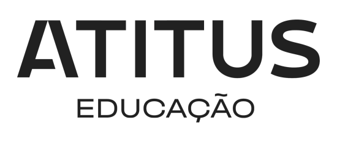

Olá, eu sou Luis Henrique Trichez
Um Estudante| Profissional auto-motivado, ágil, programador apaixonado com uma mente curiosa que gosta de resolver problemas complexos e desafiadores do mundo real.
Site desenvolvido por Luis Henrique Trichez. Ano 2024
Minha
Experiência
Minha jornada profissional foi marcada por uma evolução constante e significativa. Comecei como office boy, onde desenvolvi habilidades de comunicação, gestão de tempo e organização. Em seguida, como analista fiscal e contábil, aprofundei meu conhecimento em gestão empresarial e tributação. Por fim, como desenvolvedor, integrei minhas habilidades anteriores com a tecnologia da informação, tornando-me capaz de oferecer soluções inovadoras através da programação e automação de processos. Essa trajetória me permitiu não apenas crescer profissionalmente, mas também agregar valor às empresas por meio de uma abordagem multidisciplinar e adaptável.
Contasoft Contabilidade
Desenvolvedor\Ti
Como desenvolvedor, dei um passo adiante após adquirir as habilidades necessárias em áreas anteriores. Combinei meu conhecimento em administração fiscal e contábil com minha aptidão em tecnologia da informação para oferecer soluções valiosas às empresas.
Ao longo do tempo, concentrei-me no aprimoramento das habilidades de programação e na capacidade de mapear e automatizar processos. Essa evolução me permitiu criar soluções mais eficientes e inovadoras, proporcionando às empresas uma vantagem competitiva significativa
Junho 2023 - Atual | Marau - RS
Contasoft Contabilidade
Analista Fiscal/Contabil
Como analista fiscal e contábil, fui encarregado de administrar as questões fiscais e contábeis de um número específico de empresas. Minhas responsabilidades incluíam a apuração de impostos, lançamentos contábeis, emissão de notas fiscais e muito mais.
Ao longo dessa jornada, desenvolvi uma compreensão profunda dos processos contábeis e fiscais, além de aprimorar minhas habilidades de gestão e resolução de problemas. Essa experiência não apenas solidificou meu conhecimento técnico, mas também me preparou para enfrentar desafios empresariais de forma proativa e eficaz.
Outubro 2021 - Junho 2023 | Marau - RS
Contasoft Contabilidade
Oficce Boy
Durante meu período como office boy, fui responsável pela entrega e arquivamento de documentos. Essa experiência me proporcionou oportunidades valiosas de comunicação e aprimorou minhas habilidades de gestão de tempo e organização.
Janeiro 2021 - Outubro 2021 | Marau - RS
Tomador ISS PM Marau
Este projeto é uma ferramenta desenvolvida em Python que automatiza diversas tarefas relacionadas a processos fiscais na Prefeitura de Marau. Utilizando a biblioteca Selenium, o algoritmo acessa o site da prefeitura, faz o download de notas tomadas e prestadas, salva relatórios em PDF em pastas específicas, além de realizar outras funcionalidades como a geração de relatório de conferência, declaração de tomador ISS, verificação e emissão de guias de ISS. Tira o trabalho manual dos colaboradores, garantindo mais eficiência nos processos.
Confira!Algoritmo Modificador de Arquivo SPED
O Modifica_Sped_Fiscal é um algoritmo desenvolvido em Python 3.12 com o objetivo de automatizar e otimizar o processo de tratamento de dados fiscais em empresas. Ele extrai informações de notas fiscais no formato XML, realiza um tratamento de dados e, em seguida, sobrescreve o arquivo original SPED (Sistema Público de Escrituração Digital) com as informações corretas e nos campos adequados. Isso garante mais segurança, precisão e agilidade nos processos da empresa, facilitando a importação correta dos dados para o sistema contábil.
Confira!Robo automatizador envio REINF
O Robô Automatizador de Envio de REINF é uma solução revolucionária que substitui o trabalho manual. Utilizando uma tabela do Excel pré-preenchida, o robô extrai os dados necessários e realiza o envio de forma automática. Além disso, ele armazena os recibos essenciais e atualiza a tabela automaticamente, simplificando e agilizando todo o processo. Essa ferramenta não só elimina erros humanos, mas também otimiza significativamente o tempo e os recursos, proporcionando uma gestão mais eficiente e precisa das obrigações fiscais.
Confira!Gerado de arquivo para importação NFP
Onteriormente, o processo de reunir e lançar nota por nota era moroso e propenso a erros. Com esse algoritmo, somos capazes de agilizar e simplificar essa tarefa de maneira extraordinária. Ao utilizar o algoritmo, podemos extrair rapidamente as informações necessárias das notas fiscais paulistas e gerar um arquivo contendo todas elas. Essa abordagem elimina completamente a necessidade de lançamento manual, economizando tempo e recursos preciosos.
Confira!Atitus Educação
2023/2027 | Em andamento Ciencias da Computação
Atualmente, estou cursando Ciência da Computação, onde explorei desde os fundamentos da programação até conceitos avançados de inteligência artificial. Desenvolvi habilidades analíticas e críticas essenciais, enquanto explorava áreas como segurança da informação e desenvolvimento.
Udemy
2024 | 22 Horas Desenvolvedor Uipath RPA
Desenvolvedor UiPath habilidades essenciais para automação de processos. Este curso me proporciona conhecimento prático em desenvolvimento de soluções robóticas, preparando-me para contribuir efetivamente na otimização de processos e no aumento da eficiência operacional das empresas.

Udemy
2024 | 22 Horas RPA Com Python
Participei de um curso sobre RPA com Python, onde explorei diversas bibliotecas voltadas para automação de processos. Aprendi a utilizar essas ferramentas para desenvolver soluções eficientes que automatizam tarefas repetitivas e aumentam a produtividade. Esse curso me proporcionou habilidades práticas em Python, capacitando-me a criar soluções inovadoras de automação para diversas áreas de atuação.
Contato
Informações de Contato
E-mail: Luishenrique.triches@outlook.com
Telefone: (55) 54991990714